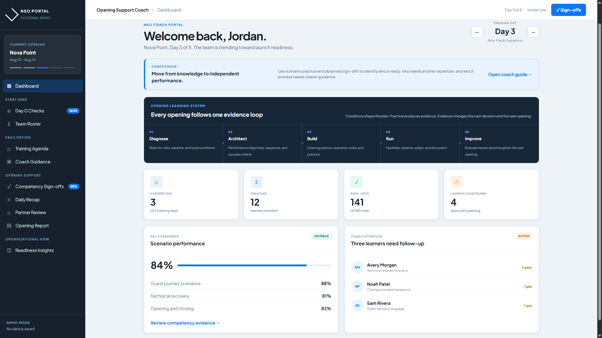
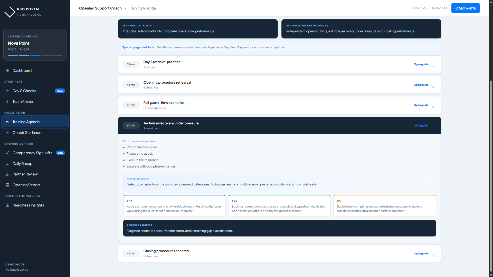
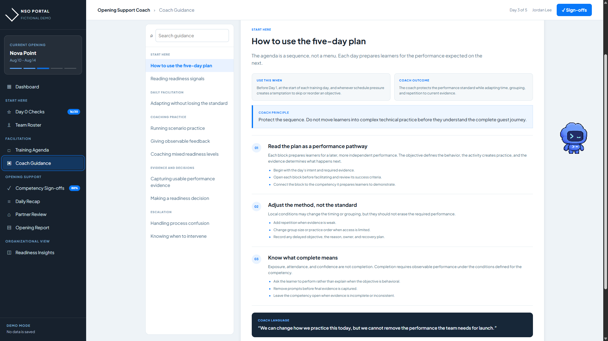
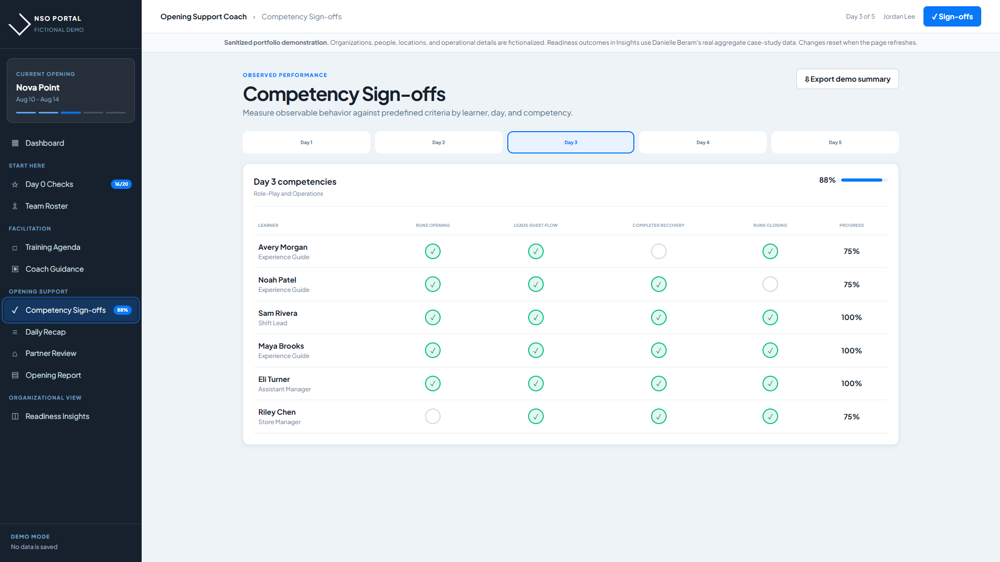
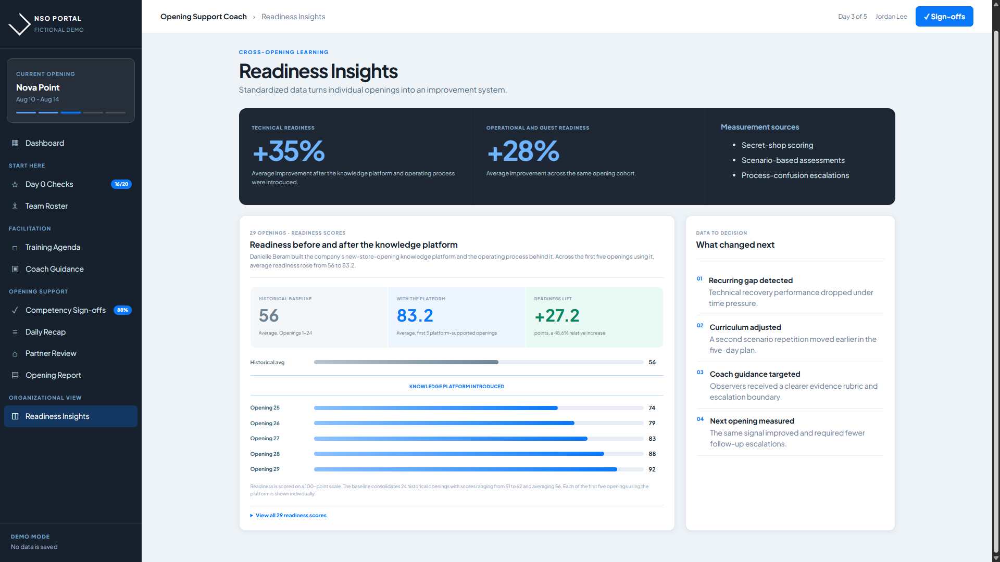
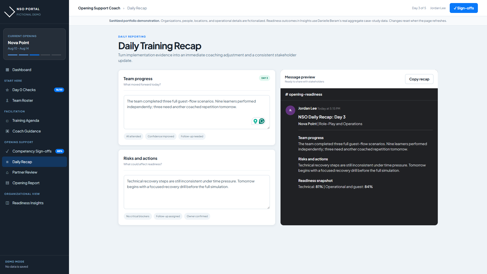

Prepare
Day 0 readiness checks, opening setup, dates, notes, and team roster.
New-store readiness product
Coaches were using spreadsheets, paper, and personal notes to manage five-day openings. I defined the shared process and built the portal used to manage the agenda, evidence, sign-offs, daily recaps, and final review.
| Role | Process definition, requirements, application build, rollout, and iteration |
| Problem | No shared opening workflow or consistent method for recording readiness |
| Deliverable | A secure portal for the five-day agenda, competency evidence, sign-offs, recaps, partner review, and closeout |
| Result | Average readiness rose from a 56 historical baseline to 83.2 across the first five platform-supported openings |
The product






New Store Opening events are short, operationally intense, and full of decisions that matter after the coach leaves. Coaches develop multiple trainees, document readiness, complete recurring reviews, coordinate with local leadership, and formally close the event with the franchise partner.
Before the portal, those activities had no single digital system. The organization needed shared answers to five questions: what coaches did each day, what trainees had to demonstrate, what the franchise partner confirmed, what leaders needed in the daily recap, and what evidence remained after closeout.
No product or engineering team was assigned to the project. I worked directly with the opening process, defined the requirements, and built the application.
Readiness had to be recorded as observable performance, not attendance or confidence. That decision shaped the competency criteria, scenario assessments, sign-offs, daily recaps, partner confirmations, and the cross-opening comparison view.
The portal follows the opening from Day 0 preparation through the five-day agenda, competency checks, partner review, and final export.
Day 0 readiness checks, opening setup, dates, notes, and team roster.
Five-day agenda, learning objectives, embedded coach guidance, and resources.
Per-trainee competency tracking, attendance, progress, and formal sign-offs.
Structured daily recaps with a ready-to-share Slack preview.
Partner checkpoints, leadership confirmation, and opening-weekend reporting.
Completed-opening history and administrative export for organizational review.
Each training block identifies what the coach should explain, what the learner should practice, what the coach should observe, and what evidence should be recorded.
The application uses Supabase authentication, Postgres, and database-level row security. Coaches work only with openings assigned to them, while administrators can review records across openings.
Stable record identifiers prevent duplicate checklist and sign-off entries. Names, dates, and first-confirmation timestamps create a more dependable operational history without silently replacing the original confirmation moment.
The portal includes a shared-iPad warning, prominent sign-out controls, automatic sign-out after inactivity, required-field validation, and guardrails that prevent actions from being recorded without an active opening.
I built the front end in browser-native HTML, CSS, and JavaScript, with Supabase as the managed backend and GitHub Pages for deployment. The codebase remains limited to browser-native files plus the managed backend, which I maintain without a separate engineering team.
The portal records competency performance, readiness checks, scenario assessments, daily recaps, process-confusion escalations, formal confirmations, and opening outcomes. Those fields allow the same measures to be compared across openings.
Sanitized architecture view · production configuration and identifiers omitted
“I have now completed three openings using the portal, and I genuinely would not want to run another opening without it… By the end of the opening, I know the work has been captured properly and that nothing important has disappeared into someone’s personal notes.”
NSO Coach · exact feedback-survey quotation
Readiness comparison
The historical baseline consolidates the 24 openings completed before the platform launched.
Measured through secret-shop scoring, scenario-based assessments, and process-confusion escalation tickets.
Measured through the same combined evidence: observed performance, scenario execution, and process-confusion escalations.
The comparison covers 24 historical openings and the first five openings supported by the portal. It shows an average difference during the initial rollout; it does not isolate the portal from the curriculum, coach guidance, or other changes introduced at the same time.
Readiness improvements are average changes observed across the first five portal-supported openings using the stated measurement sources.
Field use led to shared-device protections, dual-party confirmations, planned-versus-actual date capture, variance notes, expanded setup, scorecards, and a broader administrative export.
Sign-offs, assessments, recaps, escalations, partner reviews, and opening outcomes now remain available after closeout. They can be reviewed when the curriculum, coach guidance, or readiness criteria are updated for a later opening.
Interactive product demo
The production portal contains private employee and operational information. This public version recreates the product with entirely fictional people, locations, and opening details while preserving the core workflows and interaction design.
Move through readiness checks, the training agenda, coach guidance, competency sign-offs, daily recaps, partner review, opening closeout, and the cross-opening comparison view.
Explore the sanitized interactive demo